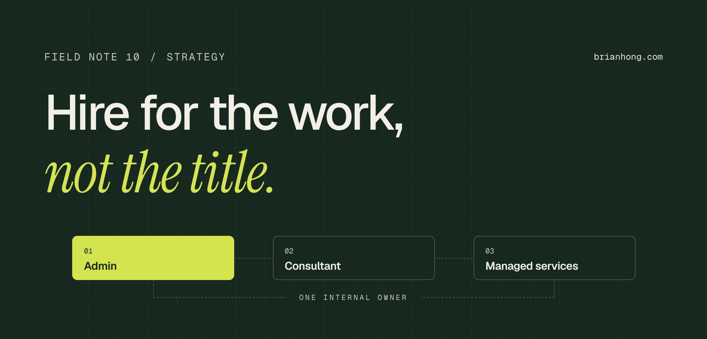

Salesforce consultant vs. admin vs. managed services: which one you actually need
Most companies don’t pick the wrong kind of Salesforce help. They pick the right kind for the wrong job.

A COO once asked me to settle an argument. Their head of sales wanted to hire a Salesforce admin. Their CFO wanted to sign a managed services contract because it was cheaper than a salary. Their IT director wanted to bring a consultant back to “fix it properly this time.” All three had a point, and all three were answering a different question.
The short answer: hire a Salesforce admin when you have steady, daily change and need someone who knows your business. Bring in a Salesforce consultant for a defined project that needs expertise you don’t have in-house. Use managed services when you need ongoing support across several skill sets but can’t justify a full-time hire. Most growing companies end up with a combination.
I’ve spent 12 years in Salesforce orgs from 200 users to more than 60,000, and I’ve worked in all three seats: in-house admin, outside consultant, and the person a managed services team hands the hard tickets to. This note is the advice I give when someone asks which one they need, including where each model breaks down.
The three ways to staff Salesforce
They get used interchangeably in sales conversations, but they’re different jobs with different incentives:
- Salesforce admin (in-house) An employee who owns the org day to day: users, permissions, reports, dashboards, page layouts, Flows, data quality, and release management. Their advantage is context. They know which VP needs which report and why a field exists.
- Salesforce consultant An outside expert, independent or from a Salesforce partner, hired for a defined scope: an implementation, a new cloud, a rescue, an integration, or an architecture decision. Paid by the project or by the hour, and gone when the scope is done.
- Managed services A retainer with a partner who handles administration, enhancements, and support on an ongoing basis. You buy a block of hours or a service level each month and get access to a team: admins, developers, and an architect when needed.
Two variations come up constantly. A fractional admin is one experienced person working part-time for several companies, usually 10 to 20 hours a week each. It’s a managed services arrangement with one named person instead of a team. An accidental admin is the sales ops manager or office manager who inherited Salesforce on top of a full-time job. That’s how most small orgs start, and it works until it suddenly doesn’t.
Salesforce admin vs. consultant vs. managed services, side by side
This is the comparison I sketch on a whiteboard. The cost ranges are typical US figures for 2026. Your market and scope will move them.
| In-house admin | Consultant | Managed services | |
|---|---|---|---|
| Best for | Steady daily change and user support | A defined project with a start and end | Ongoing support without a full-time hire |
| Pricing model | Salary plus benefits | Fixed bid or hourly | Monthly retainer |
| Typical US cost | $90K–$150K base salary | $150–$250/hr; architects $200–$400/hr | $3K–$15K per month |
| Business context | Deep, and it grows over time | Learned during discovery | Moderate, depends on staff turnover |
| Breadth of skills | One person’s skill set | Deep in the project’s area | A team: admin, developer, architect |
| Response time | Same day, often same hour | Depends on their schedule | Whatever the SLA says |
| Continuity risk | High if they leave | Ends when the project ends | Low, the provider covers gaps |
| Strategic input | Depends on seniority | Strong within scope | Varies a lot by provider |
Read the table by row, not by column. If response time and business context matter most, the admin wins. If you need breadth without headcount, managed services wins. If the work has an end date, a consultant wins. Nobody wins every row, which is why the hybrid section below matters more than the comparison.
Do I need a Salesforce admin?
You need a dedicated admin, full-time or fractional, when Salesforce changes every week because the business does. These are the signals I look for:
- A standing request queue Users ask for new fields, reports, and access every week, and the requests sit for days because nobody owns them.
- An accidental admin at the limit The person doing it part-time is now spending more than a third of their week on Salesforce and doing their real job badly.
- Data quality is drifting Duplicates, empty required fields, and reports nobody trusts. Someone has to own the data every day, not in a quarterly cleanup.
- Leadership runs the business from dashboards If the forecast lives in Salesforce, someone needs to know exactly how every number on it is calculated.
A good admin is the cheapest per-hour Salesforce expertise you’ll ever buy, because they don’t spend hours relearning your business. They know the history, the people, and which shortcuts were taken in 2021 for a reason.
Admins have a ceiling, though, and it isn’t a talent problem. One person can’t be expert in Flow, CPQ, integrations, security, Experience Cloud, and Agentforce at once. When the work outruns their experience, they build something that works today and costs you later. That’s where most of the technical debt I find in a tech debt audit comes from: a capable admin asked to make an architecture decision alone.
“Hiring an admin to do an architect’s job doesn’t save money. It moves the cost into next year’s rebuild.”
When do you need a Salesforce consultant?
Bring in a consultant when the work has a scope and a deadline and needs expertise you won’t need on staff after it ships.
- A new implementation First-time Salesforce, or a migration off another CRM. Data model and security decisions made now are expensive to reverse.
- Adding a cloud or a major product CPQ, Service Cloud, Experience Cloud, Marketing Cloud, or Agentforce. Each one has design patterns your admin hasn’t learned yet and shouldn’t learn on your production org.
- A rescue Adoption is falling, automation conflicts, or the last implementation went sideways. You need someone with no attachment to past decisions.
- Mergers and reorganizations Two orgs into one, new territories, or a new sales motion. These are architecture problems disguised as admin tasks.
- Integrations ERP, billing, marketing automation, data warehouses. Getting the system of record and the sync direction wrong creates problems for years.
- An outside opinion An org health check, a roadmap, or a second opinion on a big decision before you commit budget to it.
My opinion, after cleaning up after a lot of projects: what you’re really paying a consultant for is the decisions, and those are only worth something if they’re written down. If a consultant leaves without documented design decisions, a handover to whoever runs the org next, and admins trained to maintain what was built, you paid for a rental.
Also be clear about what a consultant is not. They aren’t a fast way to clear your admin backlog. Paying $200 an hour for someone to add picklist values and fix report filters is one of the most common budget mistakes I see.
When do Salesforce managed services make sense?
Managed services fill the space between “we can’t justify a full-time admin” and “we need more than one person’s skills.” I recommend them in these situations:
- You have no admin and fewer than about 50 users The workload doesn’t fill a full-time role, but it’s too much for an accidental admin.
- You have an admin who needs backup A retainer gives your admin a developer for the Apex trigger, an architect for the integration question, and coverage for vacation.
- Your backlog keeps growing Steady enhancement work that a single admin can’t keep up with, but that isn’t big enough to run as a project.
- You need predictable spend A flat monthly fee is easier to budget than a hire plus surprise consulting invoices.
The weakness of managed services is context. You’re rarely the provider’s only client, and the person working your ticket this month may not be the one who worked it last month. Good providers solve this with a named lead, a written runbook for your org, and the same small pod of people every month. Ask for all three before you sign.
Know what you’re buying. A managed services agreement should spell out hours or capacity per month, response times by severity, who your named contacts are, what happens to unused hours, how releases are tested and deployed, and what documentation you own when the contract ends. If it only talks about hours, it’s a ticket queue, not managed services.
What does each option cost?
Most price comparisons put a salary next to a retainer and stop there. Compare what it costs to get the same work done instead.
- In-house admin US base salaries for Salesforce admins mostly run $90K–$150K depending on seniority and market, per Salesforce Ben’s 2026 admin salary guide. Add 25–35% for benefits and payroll taxes, plus recruiting and three to six months of ramp-up before they’re fully productive. A mid-level admin’s first-year cost often lands around $140K–$185K.
- Consultant Independent consultants and mid-size partners in the US typically bill $150–$250 an hour. Senior architects and specialists in CPQ or integrations run $200–$400. Large global systems integrators charge more. Fixed-bid projects bake in a risk premium, so a clear scope saves real money.
- Managed services Most small and mid-market retainers fall between $3K and $15K a month. Enterprise agreements with 24/7 support and dedicated teams go well beyond that. Watch the effective hourly rate: divide the monthly fee by the hours you actually use, not the hours you’re allowed.
The hidden costs move the decision more than the sticker prices do:
- Admin turnover When an undocumented admin leaves, you pay for months of rediscovery. Budget for documentation as part of the job, not a nice-to-have.
- Rework A cheap build that a consultant has to rip out next year costs twice. This is the most expensive line item nobody puts in the comparison.
- Unused retainer hours Retainers that roll over a few hours are fine. Retainers you underuse every month are a subscription you forgot to cancel.
- Leadership time Someone on your side has to prioritize the work. No staffing model removes the need for an internal owner.
The hybrid model most orgs end up with
Once a company passes about 100 users, I almost always recommend the same structure: an in-house admin who owns the org, a partner on a small retainer for depth, and consultants brought in for defined projects.
The admin holds the context and handles the daily work. The retainer gives them a developer and an architect to escalate to, so they aren’t making big design decisions alone. Projects that need specialists, such as a CPQ rollout or an Agentforce pilot, go to a consultant with a clear handover back to the admin.
The reason this works is ownership. Every model fails the same way: when nobody inside the company owns Salesforce, outside help optimizes for the ticket in front of them, not for your org five years from now. The admin is that owner. As the team grows, that ownership becomes a Salesforce Center of Excellence: decision rights, a delivery process, and guardrails that keep everyone, internal or external, building the same way.
“Outsource the work, not the ownership. Somebody inside the company has to care about the org five years from now.”
Red flags in each model
Each model has a failure mode I’ve seen many times. Here’s what to watch for:
- The admin who’s really a firefighter Every day is urgent fixes and access requests, and nothing on the roadmap moves. That usually means you’re understaffed. Don’t blame the admin for it.
- The admin with no peer review Changes go straight to production, nothing is tested in a sandbox, and only one person understands the automation.
- The consultant who leaves no trail No design document, no handover, and automation only they can explain. You’ll pay them again to change it.
- The consultant who agrees to everything Every request becomes custom code. A good consultant pushes back and tells you when standard functionality is good enough.
- The managed services ticket queue Hours get used every month, but the org isn’t improving. You get monthly reports with ticket counts instead of outcomes.
- The rotating provider bench A different person on every request, each one relearning your org on your dime.
Whatever model you choose, measure outcomes: adoption, data quality, time to deliver requests, and how often releases break something. Ticket counts and hours used don’t tell you whether Salesforce is getting better.
Which model fits your company’s size?
Size isn’t the only factor, but it’s a reliable starting point. This is the rule of thumb I use:
| Stage | Recommended setup | Why |
|---|---|---|
| Under 25 users | Accidental admin plus a consultant for setup, or a small fractional retainer | Not enough work for a hire, but setup decisions still need expertise |
| 25–100 users | Fractional admin or managed services, moving to a full-time admin as change volume grows | Weekly change starts to need a dedicated owner |
| 100–500 users | Full-time admin plus a partner retainer, and consultants for projects | The hybrid model: context in-house, depth on call |
| 500+ users | An internal team or Center of Excellence, with partners for specialist work and surges | Governance and release management become the main job |
Two things change the answer more than headcount: complexity and the pace of change. A 60-user company with CPQ, two integrations, and a field service team needs more than a 300-user company running standard Sales Cloud. If your org is complex and you’re not sure where it stands, a short health check or audit is a cheap way to find out before you commit to a staffing model.
If you’re weighing these options right now, try this first: list the last 20 Salesforce requests your team made and sort them into daily changes, projects, and things nobody on staff could handle. Whichever pile is biggest tells you which kind of help to buy first. The consulting FAQ covers engagement models in more detail, and data stewardship is the habit that keeps any model working after the project ends.
Frequently asked questions
What is the difference between a Salesforce admin and a Salesforce consultant?
A Salesforce admin is usually an employee who runs the org day to day: users, security, reports, automation, and data quality. A Salesforce consultant is an outside expert hired for a defined project, such as an implementation, integration, or redesign. The admin owns the org long term. The consultant delivers a scope and hands it back.
Is Salesforce managed services cheaper than hiring an admin?
Often, for smaller orgs. A managed services retainer typically costs $3,000 to $15,000 a month, while a full-time US admin usually costs more than $120,000 a year once benefits are included. Once the workload fills a full-time role, an in-house admin is usually cheaper per hour and brings deeper business context.
Do I need a Salesforce admin if I have a consultant?
Usually yes, once your org is past initial setup. Consultants deliver projects and then leave. Someone still has to support users, manage changes, protect data quality, and own the roadmap. That person can be a full-time admin, a fractional admin, or a managed services team, but someone has to own the org.
How many Salesforce users before you need a full-time admin?
As a rule of thumb, somewhere between 50 and 100 active users, or sooner if the org is complex. Complexity and pace of change matter more than headcount: CPQ, integrations, or frequent process changes can justify a full-time admin for a much smaller team.
What should a Salesforce managed services agreement include?
Monthly hours or capacity, response times by severity, named contacts, how unused hours are handled, how changes are tested and deployed, reporting on outcomes rather than ticket counts, and ownership of all documentation and configuration if the contract ends.
Can a Salesforce consultant replace an admin?
Not well, over the long term. A consultant can cover admin work for a while, but at consultant rates and without the business context an admin builds over time. For ongoing administration, a fractional admin or managed services retainer is a better fit than hourly consulting.
What is a fractional Salesforce admin?
A fractional Salesforce admin is an experienced admin who works part-time for several companies, typically 10 to 20 hours a week per client. It suits companies that need consistent, named expertise but don’t have enough work for a full-time hire.